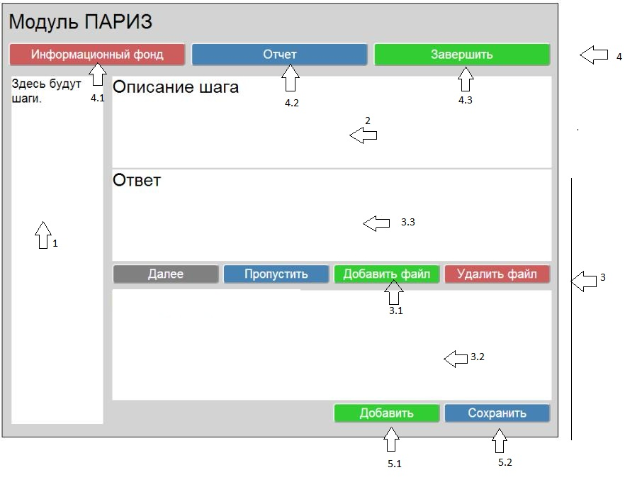

Описание внешнего вида приложения.

Список рабочих областей и описания их краткого назначения:
- Навигационная панель – осуществляет навигацию по шагам алгоритма ТРИЗ, непройденные шаги помечаны красным цветом, пройденые - зеленым.
- Область выдачи рекомендации – предоставлению пользователю рекомендаций в соотвествии с выбранным этапом алгоритма.
- Область редактирования – именно в этой области пользователь может добавить свои выводы и заключения, к которым он пришел на конкретном шаге. Область редактирования делится на подобласти:Кнопка загрузки файла – позволяет загрузить файл со схемой.
3.1 Область отображения схем – отображает загруженный пользователем файл.
3.2 Область заметок – отображает набранный пользователем текст.
- Строка меню – на этой панели находятся основные средства управления программой.
4.1. Информационный Фонд - вызывает информационный фонд.
4.2. Отчет – дает возможность работать с отчетом, существует возможность: Вывести отчет, Сохранить отчет.
4.3. Завершить - дает возможность завершить работу.
- Управляющие кнопки
5.1. Добавить - позволяет добавить описанные заметки к общему решению.
5.2. Сохранить - позволяет сохранить сделанную работу.